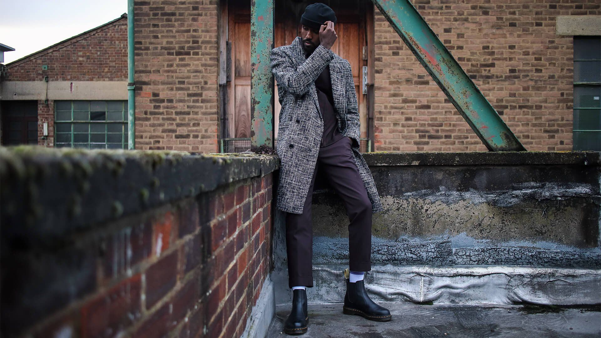
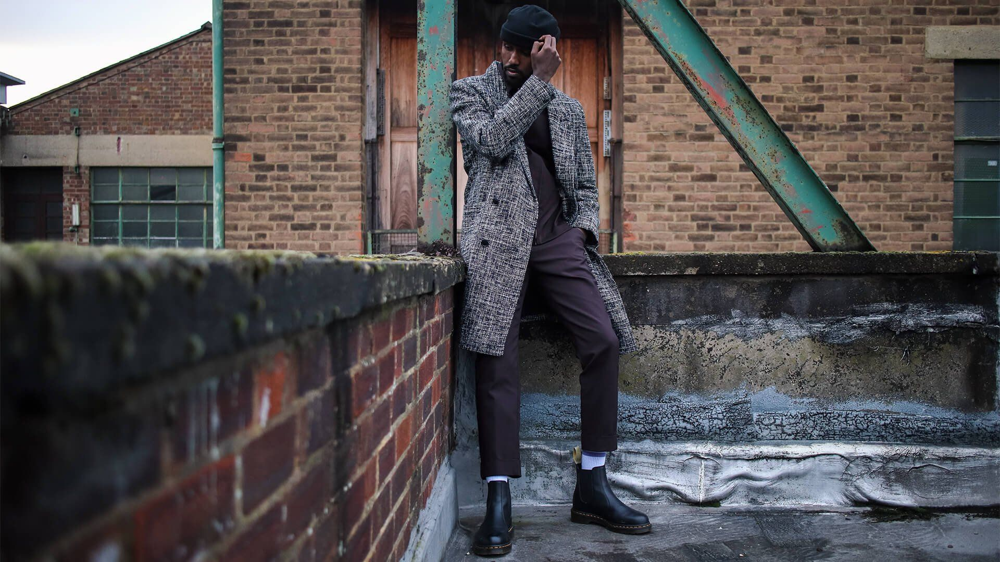

EOS M50

Caractéristiques
Capteur CMOS plein format de 24,1 millions de pixels
Un capteur CMOS 24,1 millions de pixels et un processeur DIGIC 8 pour vous permettre de graver vos souvenirs dans des images riches en détails et en couleurs.
Autofocus CMOS Dual Pixel
Grâce au capteur de type reflex et à l’incroyable puissance de traitement du EOS M50, réalisez de superbes photos et des vidéos 4K de cinéma directement avec l’appareil photo, même dans les conditions d’éclairage les plus difficiles.
ISO auto (100-6400), 100-25.600 par paliers de 1/3
Avec sa sensibilité élevée (possibilité d’extension jusqu’à 51.200), le Canon EOS-M50 Profites d’images nettes et précises grâce à la mise au point automatique précise même en faible lumière.
Vidéo 4K 60p
Réalisez de superbes vidéos en 4K.
Vitesse de prise de vue en continu jusqu'à 10 im./s
Viseur électronique (EVF)
Prise en main similaire à celle de l’EOS avec grand viseur électronique réactif.
Les +
Connexion WIFI, bluetooth
Connexion, partage et sauvegarde sans fil.
Poids plume
Avec un poids plume de 387 g, l'EOS M50 s'emporte facilement partout.
Galeries
 
